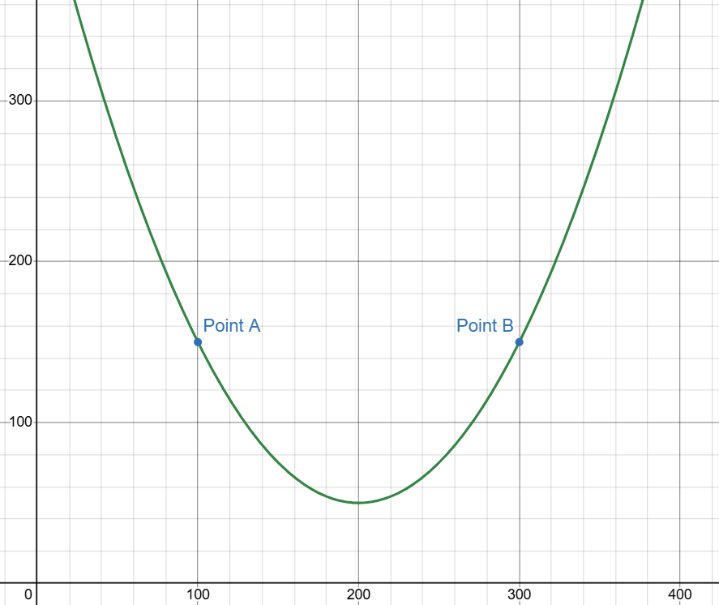

| Jump To Section:
You can't correct an invisible mistake.
So, when parametric models want to learn prediction errors, they need to know what went wrong, and by how much.
To do this, we can use cost functions, which give us a mathematical representation of exactly this. There are many to choose from, but two common ones are:
Take-home message: the cost function tells us the "cost" of the error(s) in our model's prediction. We want to minimise it.
And to do that, we can use gradient descent:
Parametric cost functions minimise their cost functions by tweaking the parameters themselves.
Specifically, we take the partial derivative of the cost function with respect to each parameter, then tweak our values accordingly.
(If you've forgotten about derivatives and partial derivatives, please go back over this).
To explore this process in more detail, consider the graph below:
At Point A, the derivative of this function would be negative. Therefore, we need to increase the x value (said differently: subtract some positive multiple of this derivative from the x value) to decrease the function.
At point B, the derivative is positive. So therefore, we need to decrease the x value (or subtract a positive multiple of the derivative from the x value) to decrease the function.
This is the essence of gradient descent.
By giving us the partial derivative of the cost function relative to a parameter, it tells us whether we need to increase or decrease that particular parameter to reduce the cost function.
In practice, there can be billions of parameters, and many-dimensional gradients need to be calculated, but the core process is the same.
Which leads us nicely onto learning rate.
Gradient descent tells us how to change a parameter.
But it's the learning rate that tell us how much to change it by.
Each time the model makes a prediction, it re-computes the cost function, and adjusts itself based on the learning rate specified for each individual parameter.
Mathematically, this can be written as:
But it's not as easy as picking a random number.
If the learning rate is too low, it'll take forever to optimise the parameters.
But if it's too high, it can miss the minimum completely, jumping to increasingly steep points on the graph until it ping-pongs far away from where it should be.
Regardless, it's time for our final topic.